<!doctype html>
<html xmlns="http://www.w3.org/1999/html">
	<head>
		<meta charset="utf-8">
		<meta name="viewport" content="width=device-width, initial-scale=1.0, maximum-scale=1.0, user-scalable=no">

		<title>Segmentation fuckup</title>

		<link rel="stylesheet" href="css/reveal.css">
		<link rel="stylesheet" href="css/theme/blood.css">

		<!-- Theme used for syntax highlighting of code -->
		<link rel="stylesheet" href="lib/css/zenburn.css">

		<!-- Printing and PDF exports -->
		<script>
			var link = document.createElement( 'link' );
			link.rel = 'stylesheet';
			link.type = 'text/css';
			link.href = window.location.search.match( /print-pdf/gi ) ? 'css/print/pdf.css' : 'css/print/paper.css';
			document.getElementsByTagName( 'head' )[0].appendChild( link );
		</script>
	</head>
	<body>
		<div class="reveal">
			<div class="slides">

                <section data-markdown data-separator="^\n---\n$" data-separator-vertical="^\n--\n$">
                    <script type="text/template">
                        ### How to reanimate a fucked up data science project


                        ** The case of modern print impulse optimization**


                        ** pandas@qu.do**

                        ---

                        <table align="center" class="reveal">
                            <tr>
                                <td>
                                    
                                    <br> Berlin + Karlsruhe
                                    <br> Software development
                                </td>
                                <td>
                                    
                                    <br> Karlsruhe
                                    <br> Data Science
                                </td>

                            </tr>
                        </table>

                        <br> </br>
                        **Team: Pandas**

                        ---

                        #### Our Customer: Mail order company
                        

                        ---

                        #### Mission: find customer segments
                        

                        ---

                        #### Unsupervised learning
                        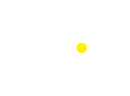

                        ---

                        

                        ---

                        #### Pro-hint: Produce many Jupyter Notebooks!

                        

                        --

                        #### Pipeline

                        - rewrite
                        \begin{align} \mathcal D_0 \overset{f_1}{\rightarrow}  \mathcal D_1 \overset{f_2}{\rightarrow}  \mathcal D_2 \cdots \overset{f_n}{\rightarrow}  \mathcal D_n
                        \end{align}
                        - as
                        \begin{align} & \mathcal D_0 \overset{m}{\rightarrow}  \mathcal D_n \newline
                        & m =  f_n \circ \cdots \circ f_1
                        \end{align}

                        --

                        #### Python


                        <pre><code>from pipeline import compose

                        model = compose(scaling, trafo, KMeans)
                        result = model(data)</code></pre>


                        - Convention: (pandas) dataframe in dataframe out
                        - Disentangle data and model
                        - Easier to talk between datascientists


                        --

                        #### Function tree
                         
                        - Building & scanning of algorithms

                        --

                        ##### python itertools: product

                        <pre><code>from pipeline import compose_tree

                        scalings = [min_max, std]
                        trafos = [identity, trafo_1, trafo_2]
                        clusterings = [KMeans, AgglomerativeClustering]
                        scores = [silhouette, davies_bouldin, dunn]

                        models = compose_tree(scalings, trafos, clusterings, scores)
                        results = models(data)</code></pre>

                        - Scores: cluster validity measures
                        - Silhouette, Davies-Bouldin, Dunn, etc.

                        ---

                        
                        - Many meetings (database unit)

                        ---

                        #### Result: Customer happy!
                        - <s>Pipeline + Take best clustering</s>
                        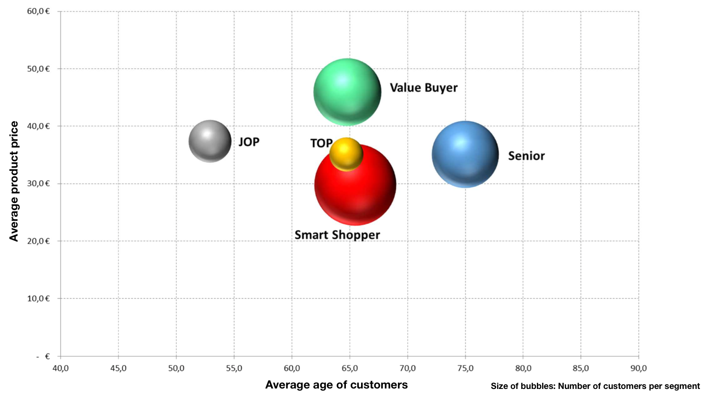

                        --

                        #### Result: Customer happy!
                        #### <font color="yellow">But</font>

                        Test: Upsell not so good!

                        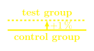


                        ##### $\Rightarrow$  Customer unhappy!
                        <!-- .element: class="fragment" data-fragment-index="1" -->
                        ##### $\Rightarrow$  Project failed
                        <!-- .element: class="fragment" data-fragment-index="1" -->


                        ---

                        #### Let's make one step back
                        - **Maybe its natural that projects fail?**
                           - Fail cheap
                           - Learn from mistakes
                        - **Maybe the customer does not know what he wants?**
                           - Support customer in finding his needs
                           - Listen to the victims
                        - **Understand the business model**
                        <p class="fragment" data-fragment-index="1">
                        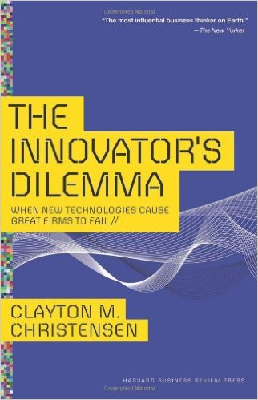
                        </p>

                        ---

                        #### <font color="yellow">[Slack]</font> New approach
                        - **Business model:** make more money!
                        - Aim for uplift maximization  <!-- .element: class="fragment" data-fragment-index="1" -->
                        - Idea: optimize segment-specific sales mix <!-- .element: class="fragment" data-fragment-index="1" -->
                        - Learn: how well did this work for the first segmentation? <!-- .element: class="fragment" data-fragment-index="1" -->


                        ---

                        **Exchange potential**
                        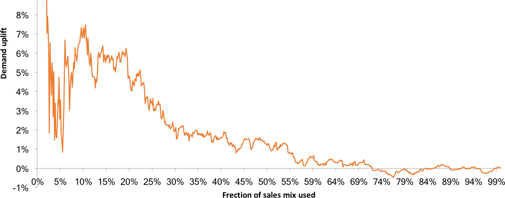
                        - Ex-post simulation (historic data)
                        - cost function $:= \int$ exchange potential


                        ---

                        <table align="center" class="reveal">
                            <tr>
                                <td> <b>Customer </b> <br>
                                    
                                <br>
                                <br> - Age
                                <br> - Sales
                                <br> ...
                                </td>

                                <td>   <b>Features </b> <br></br>\begin{align} \Huge \Rightarrow \quad \end{align} </td>
                                <td> <b> Behaviour </b> <br>
                                    
                                <br>
                                <br> - Item "age"
                                <br> - Item style
                                <br> ...

                               </td>

                            </tr>
                        </table>


                        ---

                        #### Putting things together
                        - Score
                          - Cost function
                          - <s>Silhouette et al.</s>
                        - Features: customer behaviour
                        - Pipeline: find optimal algorithm + feature set

                        --

                        #### Result: exchange potential
                        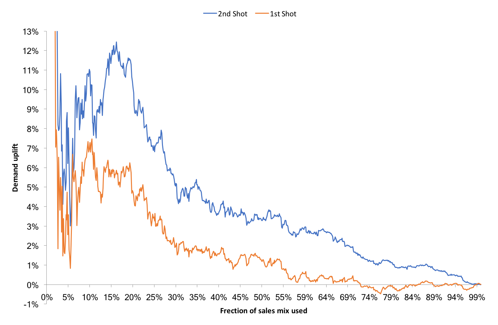

                        --

                        #### Result: look
                        Cluster "Helga"
                        

                        Cluster "Monika"
                        

                        --

                        #### Result: Test
                        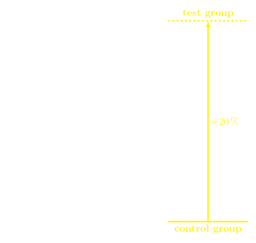


                        --

                        #### Nice side effects
                        - Reduction of return shippments
                        - Increased response rate (# orders / cataloge)
                        - Increase of catalogue lifetime

                        ---

                        #### Summary
                        - Fail cheap!
                        - Make your stuff reproduceable
                        - Work hard on features
                        - Have endurance (?)


                        ---

                        ##### Can you teach me about?
                        - $\mathcal l^p$ "Norms" for $p < 1$ (curse of dimensionality)
                        - Topological data analysis
                        - Graphical (Bayes) methods for clustering


                        #### Thanks!


                        ** pandas@qu.do**

                    </script>
                </section>


			</div>
		</div>

		<script src="lib/js/head.min.js"></script>
		<script src="js/reveal.js"></script>

		<script>
			// More info https://github.com/hakimel/reveal.js#configuration
			Reveal.initialize({
				history: true,

				math: {
		            mathjax: 'https://cdn.mathjax.org/mathjax/latest/MathJax.js',
		            config: 'TeX-AMS_HTML-full'  // See http://docs.mathjax.org/en/latest/config-files.html
	            },

				// More info https://github.com/hakimel/reveal.js#dependencies
				dependencies: [
					{ src: 'plugin/markdown/marked.js' },
					{ src: 'plugin/markdown/markdown.js' },
					{ src: 'plugin/notes/notes.js', async: true },
					{ src: 'plugin/highlight/highlight.js', async: true, callback: function() { hljs.initHighlightingOnLoad(); } },
					{ src: 'plugin/math/math.js', async: true }
				]
			});
		</script>
	</body>
</html>
